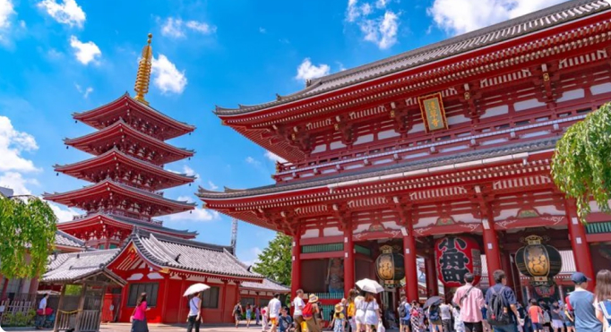

淺草一帶散發出濃濃的懷舊氣息，這裡保留了東京昔日的下町文化，最知名的景點是淺草寺的正門「雷門」，雷門左右供奉著風神與雷神，共同守護著這座東京都內最古老的寺院。從雷門到寶藏門的仲見世商店街，販售著各式傳統點心、紀念品，必吃的炸饅頭、人形燒、抹茶冰淇淋都可以在這裡找到。寶藏門前的左手邊是供奉聖觀音的五重塔，通過掛有小舟町紅燈籠的寶藏門後即可看到寺院本體，就可以入內參拜囉！

淺草一帶散發出濃濃的懷舊氣息，這裡保留了東京昔日的下町文化，最知名的景點是淺草寺的正門「雷門」，雷門左右供奉著風神與雷神，共同守護著這座東京都內最古老的寺院。從雷門到寶藏門的仲見世商店街，販售著各式傳統點心、紀念品，必吃的炸饅頭、人形燒、抹茶冰淇淋都可以在這裡找到。寶藏門前的左手邊是供奉聖觀音的五重塔，通過掛有小舟町紅燈籠的寶藏門後即可看到寺院本體，就可以入內參拜囉！
2022新開幕的東京美食街可別忘了淺草橫町！淺草橫町就開設在淺草樂天地的四樓，它不單單是條普通的東京美食街，而是將美食與慶典的概念融合，讓顧客到訪用餐時也能享受參加祭典般的輕鬆氛圍～ 這裡不僅聚集了日本各地的美食餐廳，不時還有祭典或傳統舞蹈演出，加上充滿祭典味道的裝飾及招牌，讓人真的有置身在祭典的錯覺。更棒的是還有和服出租店，滿足遊客想換上和服拍照打卡的願望！
日本人氣河豚餐廳 | 河豚料理名店・玄品河豚
地址：台東區上野2-1-6 1F-4F
如何抵達：
JR御徒町站步行3分鐘 , 地下鐵銀座線上野廣小路站步行1分鐘
東京美食｜肉屋台所 新宿店
地址：東京都新宿區歌舞伎町 1-6-14 2樓
如何抵達：
從JR新宿車站步行3分鐘
日本東京｜海鮮居酒屋・墨之榮
東京都中央區日本橋室町2丁目2−1 COREDO室町 2F
如何抵達：
地下鐵銀座線三越前站徒歩1分

日本東京｜東京燒肉 平城苑
地址：東京都台東區雷門1-15-10
如何抵達：
東京Metro銀座線「田原町駅」徒歩1分鐘
東京人氣｜松阪牛一頭流 肉兵衛
地址：東京都港區赤坂3-10-5 赤坂クィーンビル2F
如何抵達：
地下鉄銀座線赤坂見附駅徒歩1分
日本東京｜壽司名店・雛鮨｜高級壽司吃到飽
地址：東京都中央區銀座4-1番先 西銀座デパート 2F
如何抵達：
JR有楽町站徒歩1分 , 地下鉄銀座站徒歩1分 , 地下鉄日比谷站徒歩3分